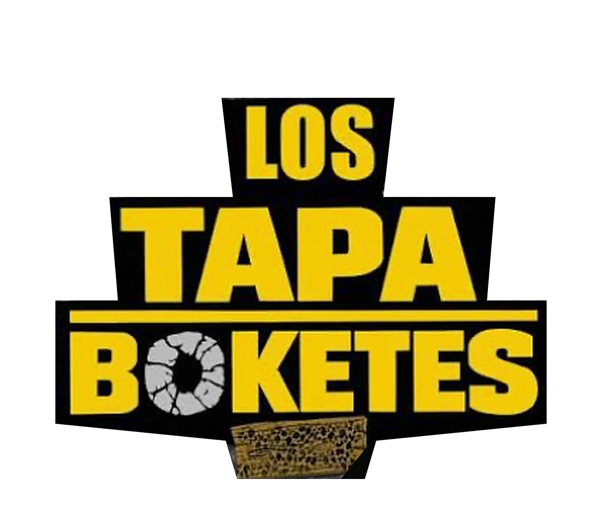

Tú pones la bolsa. Ellos tapan el bokete.
Compra bolsas de asfalto frío para Los Tapaboketes y ayúdalos a llegar a los 78 municipios de Puerto Rico.
Tres jóvenes. Cero excusas.
Se cansaron de romper gomas, aros y esquivar boketes. Así que en vez de esperar, agarraron las palas. Los Tapaboketes son tres jóvenes de Puerto Rico que tapan boketes con asfalto frío, humor y una aplanadora, sin cobrarle un chavo a nadie.
Empezaron haciendo contenido y un día quisieron llevar un mensaje positivo. Hoy llevan más de 400 boketes tapados en 73 municipios. La meta: los 78, y después, universidades y barrios.
Los auspiciadores les han dado las bolsas, pero cada municipio nuevo significa más viajes, más material y más boketes.
Tapando boketes, por el bien de Puerto Rico
Un mensaje de los muchachos
Compra bolsas de asfalto
Hazlo por Puerto Rico. Hazlo por nosotros. Escoge cuántas bolsas quieres dar y verás el total claro antes de pagar.
bolsas compradas hasta ahora
 Aquí va la foto de la bolsa
Aquí va la foto de la bolsa
Tu compra
Cada bolsa rinde para tapar parte de un bokete.
- Apple Pay · pronto
- ATH Móvil · pronto
- Tarjeta · pronto
Verás el total claro antes de pagar. Este sitio es independiente: no es una organización sin fines de lucro ni el sitio oficial de Los Tapaboketes. Al continuar aceptas los Términos de uso y la Política de privacidad. Las compras son finales, salvo errores o cobros duplicados: mira la política de devoluciones.
Avísales por sus redes
Los muchachos reciben los avisos por sus redes sociales. Aquí está cómo mandarles el tuyo para que sea fácil de encontrar.
Cómo reportar un bokete